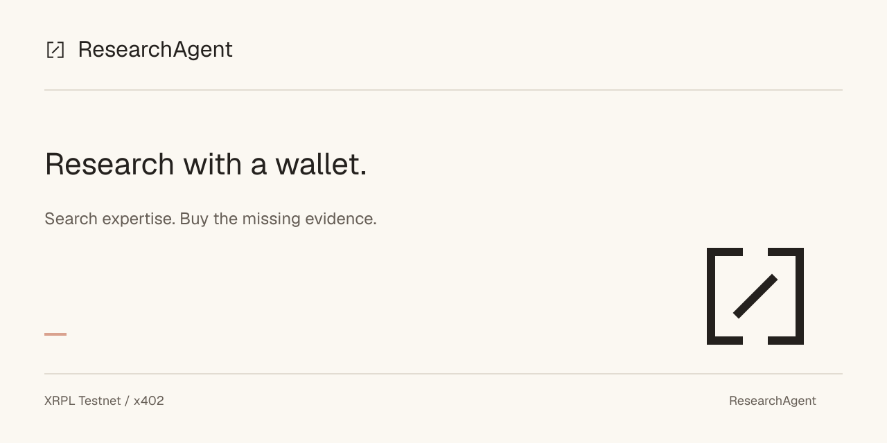

01 / One mark, every scale
16246496
24-unit grid · 1.5-unit stroke · minimum 16 px · 4-unit clear space.
02 / On dark
Dock and dark social surfaces only. The product stays light.
03 / Icon family
1024 px master → ICNS. Named run states share the mark.
04 / Cast, on the same grid
Search lens, budget, split seal, proof, ledger.
Illustrations only. Writers fictional. Settlement on Testnet.
Ink #24211EPaper #FBF8F2Salmon #D9A28F
05 / Social preview · 1280 × 640
